Porque nasceu
Publicar com regularidade é a parte mais difícil
Um pequeno negócio precisa de aparecer nas redes com regularidade, mas muitas vezes falta tempo e falta saber o que dizer. E não chega o texto: é preciso a imagem, o Reel e um plano para o mês.
Quis uma ferramenta honesta e em português de Portugal: que use só o que a pessoa conta, não invente clientes nem resultados, e entregue tudo pronto a publicar, do texto à imagem.
«Tu imaginas. A LK dá vida.»
O que entreguei
Tudo o que a LK faz
Experimentar e comprar
Amostra grátis, sem cartão
3 publicações com imagens para ver a qualidade antes de pagar. Pode mudar o texto, o estilo, a cor e a foto; copiar e descarregar ficam para depois da compra, com um cadeado.
Pagamento com o Stripe
9,90 € pelo mês, pagamento único. O site confirma no Stripe o valor, a moeda e o produto antes de abrir o estúdio, e as publicações da amostra passam para o mês comprado.
Sem conta para criar
Depois de pagar, a pessoa recebe um link privado do estúdio, assinado no servidor, e o mesmo link por email. Se o perder, pede-o de novo com o email da compra.
Termos claros
Uma página de termos em linguagem simples, com a amostra, os créditos, a livre resolução, o uso do conteúdo e o Livro de Reclamações Eletrónico.
O estúdio
A marca em 2 minutos
Negócio, o que vende, cliente ideal, tom de voz, objetivo, redes, o que a distingue e provas reais. A IA só usa as provas que a pessoa escrever.
30 publicações, cada uma com um objetivo
Guardar, comentar, partilhar, seguir ou comprar, numa mistura pensada para o mês. Ganchos variados, nada de palavras vazias e nada de «comenta SIM se…», que as redes castigam.
«Feito para: as pessoas guardarem»
Editar antes de usar
Cada publicação pode ser editada: gancho, legenda, chamada para ação e hashtags. A imagem atualiza logo.
Créditos justos
Só são gastos quando as publicações ficam prontas. Se a criação falhar, não se perde nada.
Imagens, Reels e plano
7 modelos de imagem
Noite, Claro, Cor, Editorial, Minimal, Ousado e Moldura, com a cor da marca. Carrosséis com capa, slides numerados e um fecho com a marca. Desenhadas no próprio telemóvel, sem custos por imagem.
Fotos da própria marca
A pessoa pode pôr as suas fotos de fundo. Ficam só no aparelho dela, não vão para o servidor.
Guião de Reels e montagem
Cada Reel traz cenas com a duração, o texto no ecrã, o que dizer e o que filmar. A LK monta o vídeo com os vídeos da pessoa: corta cada um, põe o texto e junta o fecho com a marca.
Plano do mês em PDF
Capa, estratégia, calendário e todas as publicações com a imagem. Também há as imagens em .zip e os textos em .txt.
Kit do perfil
3 sugestões de bio com até 150 caracteres, capas para os destaques e um Story por publicação a anunciar o post.
Abertura animada
A animação original da marca LK, convertida de GIF em vídeo leve: toca uma vez e fica no logótipo. Com «reduzir movimento» ligado, mostra só a imagem final.
No painel da LELUEL
Vendas à vista
Amostras, compras, valor recebido e compras de teste, com a lista de cada pacote. «Ver o estúdio» abre o que o cliente vê, para ajudar quando há dúvidas.
Ecrãs
Como se vê
As capturas usam um atelier de interiores fictício, o «Atelier Linha Clara», com dados de exemplo. Nenhum cliente real aparece aqui.
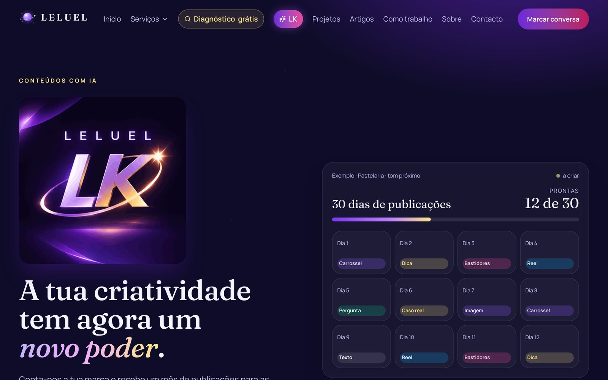
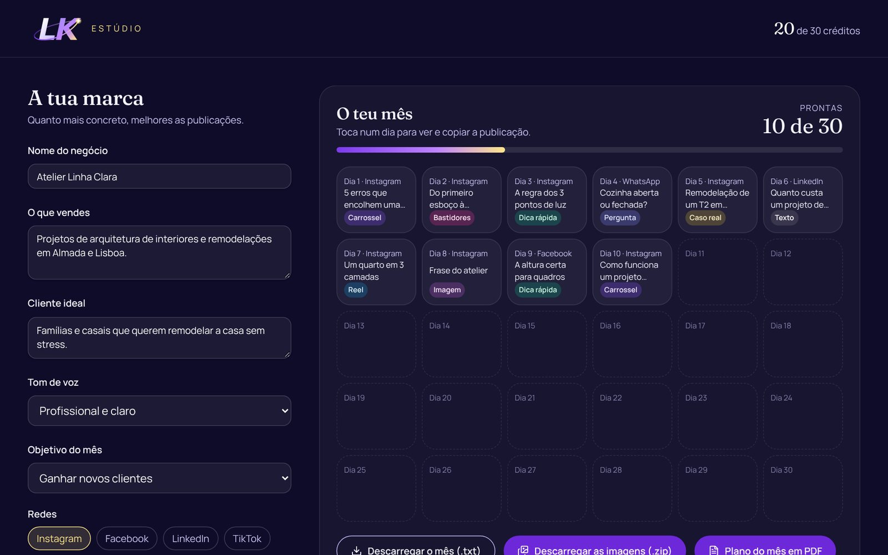
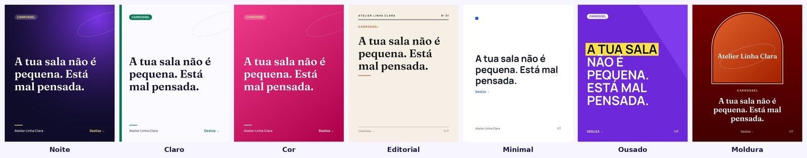
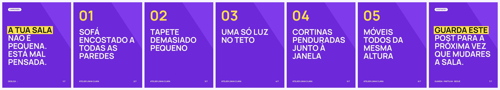
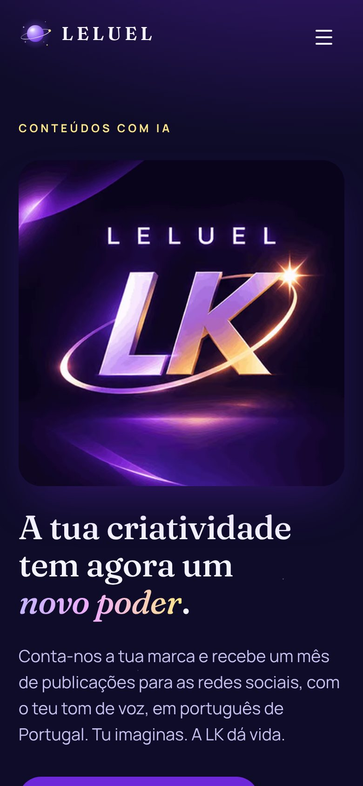
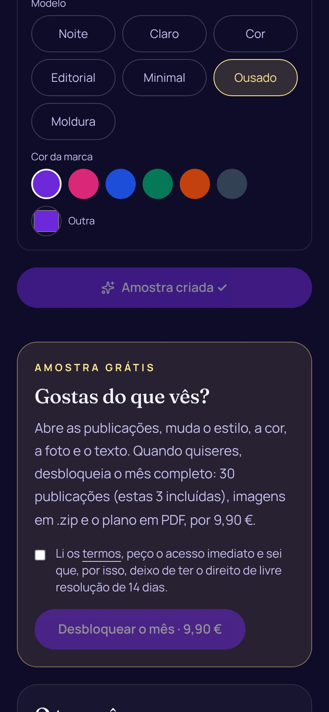
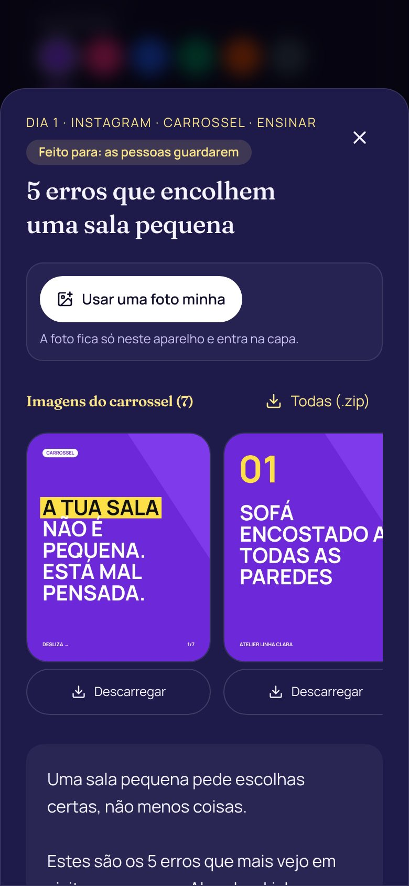
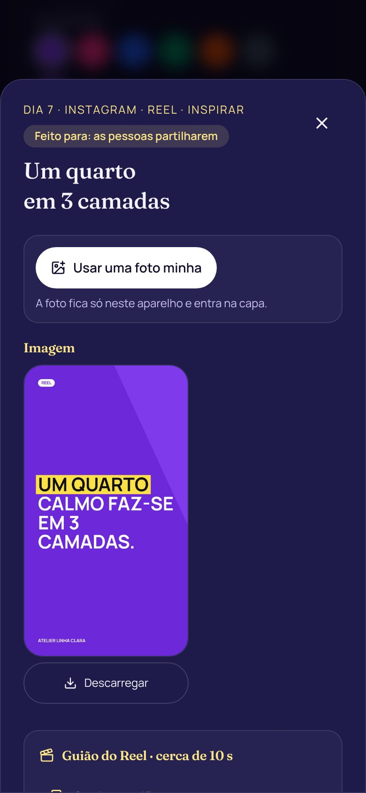
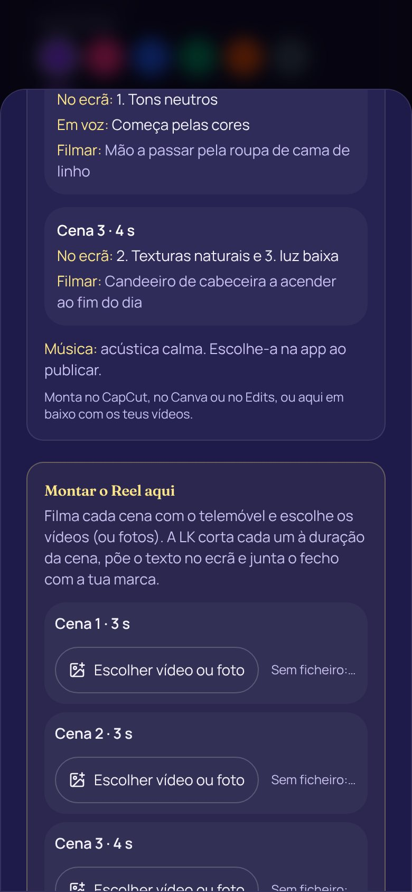
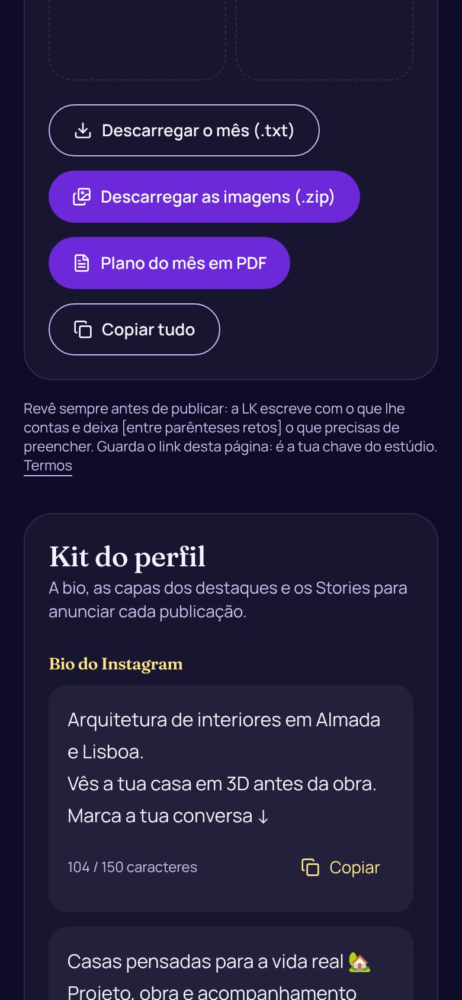
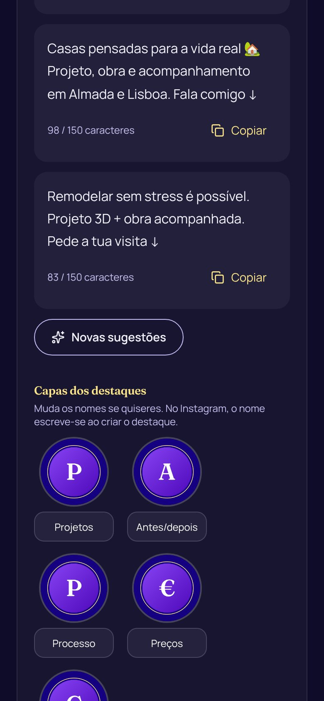
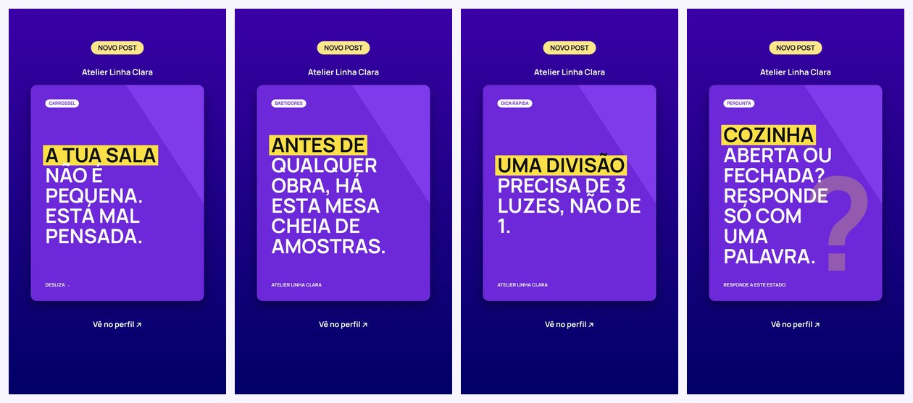
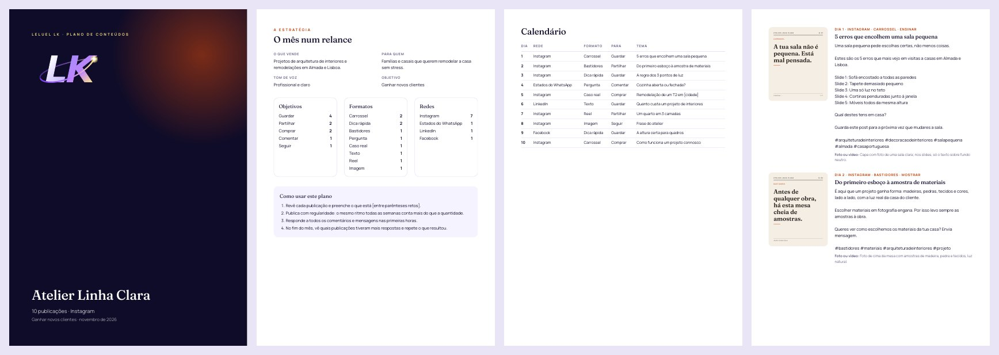
Por dentro
Da curiosidade ao mês publicado
- Visitante
Experimenta grátis
Conta a marca e recebe 3 publicações com imagens. Vê, edita e muda o estilo, sem cartão.
- Visitante
Desbloqueia o mês
Paga 9,90 € na página segura do Stripe. Ao voltar, o site confirma o pagamento e abre o estúdio completo, com a amostra já incluída.
- Automático
A LK escreve o mês
As publicações saem em lotes de 5, cada uma com um objetivo, e o calendário vai enchendo. O link do estúdio chega por email.
- Cliente
Revê, descarrega e publica
Imagens em .zip, plano em PDF, guiões de Reels e o kit do perfil. Os Reels montam-se com os vídeos da própria pessoa.
Como foi feito
Tecnologias
React, TanStack Start e Tailwind · Supabase · Stripe Checkout · modelo de IA com saída estruturada · Canvas e MediaRecorder para as imagens e os Reels, no próprio aparelho · Brevo para os emails · testes com Vitest e Playwright.
Decisões
O que decidi e porquê
A primeira versão mandava logo para o pagamento, sem a pessoa ver o resultado.
Uma amostra grátis de 3 publicações, com limites por aparelho e por dia para controlar o custo. Quem compra a partir da amostra não perde o que já criou.
As imagens só com texto eram limpas, mas genéricas para um arquiteto, que vende com fotografias.
Fotos da própria marca no fundo, 7 modelos com desenho próprio por tipo de publicação e carrosséis com capa, números e fecho.
Transformar um carrossel num vídeo não é um Reel: experimentei e não fazia sentido.
Deixei essa ideia e fiz um guião completo (cenas, texto no ecrã, voz, o que filmar) e uma montagem com os vídeos que a própria pessoa filma.
Na revisão para clientes, vi que duas pessoas na mesma rede móvel podiam abrir a mesma amostra.
A amostra passou a ser por aparelho, com um limite por ligação. Ninguém vê a amostra de outra pessoa.
O Multibanco só confirma o pagamento mais tarde, e a pessoa ficava sem acesso ao estúdio.
Na LK, só cartão, que confirma na hora. O endereço de regresso do pagamento passou a ser verificado no servidor.
A IA a pensar mais escrevia melhor, mas 10 publicações de uma vez podiam passar o tempo máximo do servidor.
Lotes de 5 publicações. O calendário enche aos poucos e cada lote fica guardado, por isso uma falha nunca apaga o que já foi feito.
Em números
A LK em números
Com franqueza
Limites atuais
- Ainda em modo de teste: os pagamentos reais abrem quando a faturação estiver tratada.
- A LK não cria fotografias. Desenha as imagens com o texto e as cores, e sugere que foto ou vídeo fazer.
- Os Reels montam-se no browser: funcionam no Chrome e no Safari, não em todos.
- Ainda sem testemunhos de clientes.
A seguir
Próximos passos
- Pagamentos reais e faturas emitidas a cada venda.
- Domínio próprio e casa própria para a LK.
- Uma galeria de exemplos reais e testemunhos, com autorização.
- Pacotes de 3 meses ou mensalidade, se houver procura.
O meu papel
Lenira Leitão
Tive a ideia e defini o produto, o nome, o preço e a amostra grátis. Escolhi a animação da marca. Decidi o que cada publicação devia ter e o que a IA não pode fazer (inventar dados, prometer resultados). Testei a compra do princípio ao fim e pedi as mudanças que faltavam: ver antes de pagar, fotos próprias, modelos com mais desenho e guiões de Reels em vez de vídeos falsos.
O código foi feito com ferramentas de IA, a partir dos meus pedidos e das minhas escolhas. Cada alteração foi revista antes de ser publicada.